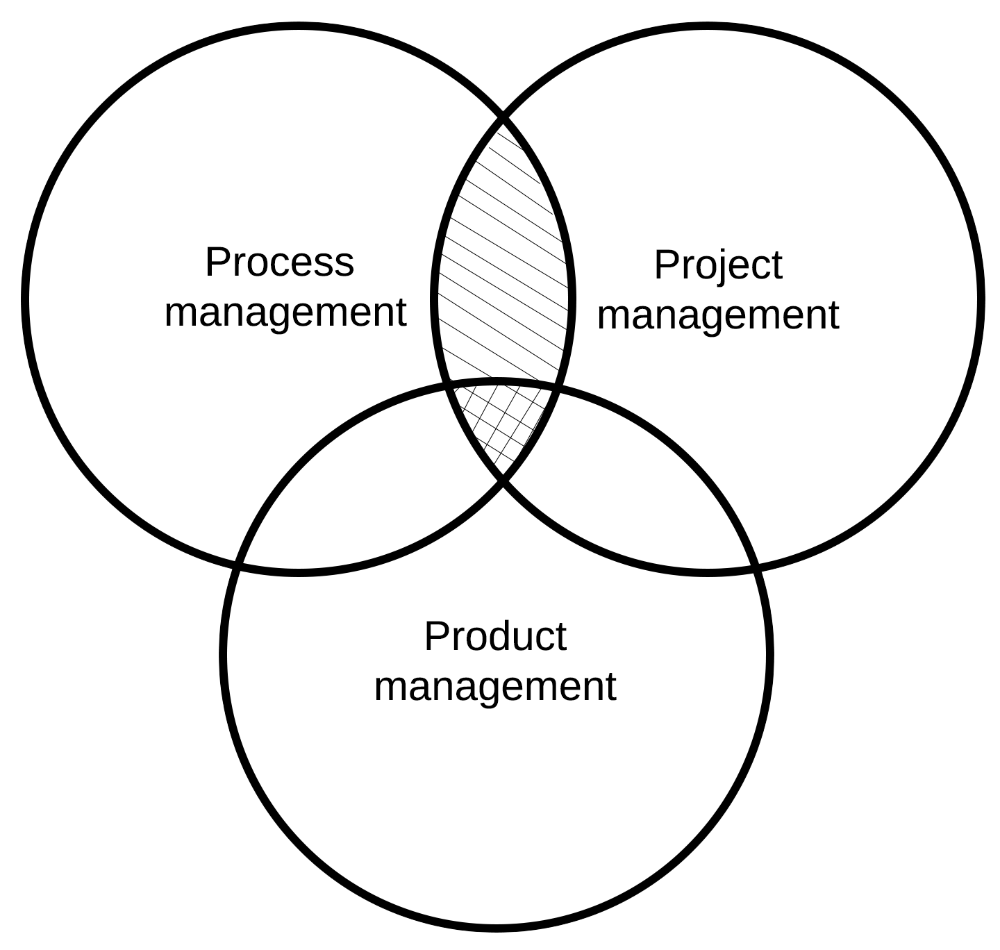

Overview
Project Management
Process Managment
Six Sigma
Lean Managment
Agile Management
Tying it All Together
Tying It All Together Overview
Strategic Assessment
Problem Solving
Future Directions
Tying It All Together: Overview

Tying it all together Overview
In this book we have been looking at the intersections between process, project, and process management. They are each unique but related and act in a sort of Venn diagram fashion. Our focus, in particular, has been on the intersections between process and project management.

Complex projects, particularly in technical fields, are often comprised of hundreds if not thousands of interconnected components which might be distributed over multiple locations or even organizations. Added to that, they are often expensive, time-consuming, competitively important, and have a rather high potential for mismanagement. They often necessitate using adaptive frameworks that continuously analyze and adapt to changing conditions. It often means working in a whole of macro trends and yet managing a world of micro realities. An immediate question to ask yourself in a given situation: Are you currently in the role of manager or leader?
Managing versus leading
"Whereas managers set out to achieve organizational goals through implementing processes, such as budgeting, organizational structuring, and staffing, leaders are more intent on thinking ahead and capitalizing on opportunities." (Gavin, 2019)
Your current leadership self
- What is your leadership style (such as theory X or theory Y)
- How do navigate between managing and leading?
- What importance do you place on team building and facilitating?
- How might you lead organizational change to achieve results?
- Self and social awareness (emotional self awareness, empathy, organizational awareness)
- Self management (achievement orientation, adaptability, emotional self control, outlook, resilience) and relationship management skills (conflict management, influence, teamwork)
Project types
Linear / predictive - A form of project life cycle in which the project scope, time, and cost are determined in the initial phases of the life cycle.
Incremental - An adaptive project life cycle in which the deliverable is produced through a
series of iterations that successively add functionality within a predetermined time span. The deliverable
contains the necessary & sufficient capability to be considered complete only after the final iteration
(Project Management Institute)
Iterative - A project life cycle where the project scope is generally determined early in the project life cycle, but time and cost estimates are routinely modified as the project team’s understanding of the product increases. Iterations develop the product through a series of repeated cycles, while increments successively add to the functionality of that product (Project Management Institute)
Adaptive - The project life cycle that is iterative and incremental.
Importance/Performance Matrix
A importance/performance matrix tries to map your current performance capability to what is important to customers. It is more often used in marketing settings but is useful in other types of management as well.

(University of Cambridge, n.d.)
References
Gavin, M. (2019). Leadership vs. Management: What's the Difference? Harvard Business School Online. Retrieved April 2, 2021 from https://online.hbs.edu/blog/post/leadership-vs-management
Tavana, M. (1995). Strategic Assessment Model (SAM): A Multiple Criteria Decision Support System for Evaluation of Strategic Alternatives. Decision Sciences, 26(1). Retrieved April 18, 2021 from https://www.academia.edu/575434/Strategic_Assessment_Model_SAM_A_Multiple_Criteria_Decision_Support_System_for_Evaluation_of_Strategic_Alternatives_
University of Cambridge. (n.d.) Decision Support Tools. Importance/performance matrix. Retrieved April 4, 2021 from https://www.ifm.eng.cam.ac.uk/research/dstools/importance-performance-matrix/